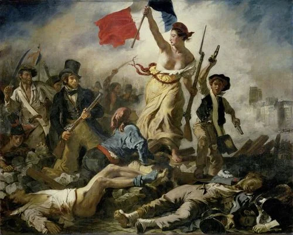
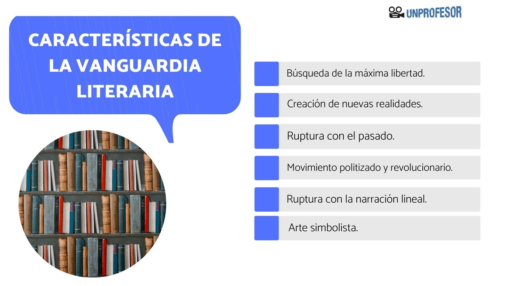
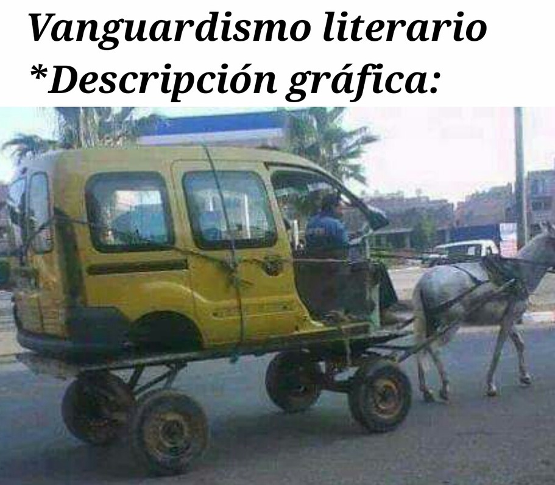
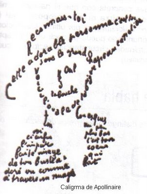

El Romanticismo es un movimiento cultural que se originó en Alemania y en Reino Unido a finales del siglo XVIII como una reacción revolucionaria contra la Ilustración y el Neoclasicismo, confiriendo prioridad a los sentimientos.

¿Qué son las Vanguardias en la Literatura?

Las vanguardias literarias son el conjunto de movimientos desarrollados dentro de la literatura durante la primera mitad del siglo XX, que buscan la renovación y libertad de expresión.

Contexto Europeo:
1974→ Primera Guerra Mundial
Crisis del Humanismo... "Dios ha muerto" (Nietzsche)→ las verdades ya no tienen sentido, se vacían.
El arte debe refutar esas verdades.
Nuevas formas de belleza y verdad:
Surrealismo (el inconsciente...)
Dadaísmo (lo paródico...)
Futurísmo (las máquinas...)
Cubismo (las simetrías...)

En América:
Inpiradas por las europeas, nacen las Latinoamericanas.
Movimientos transversales a toda América→ colectivos artísticos.